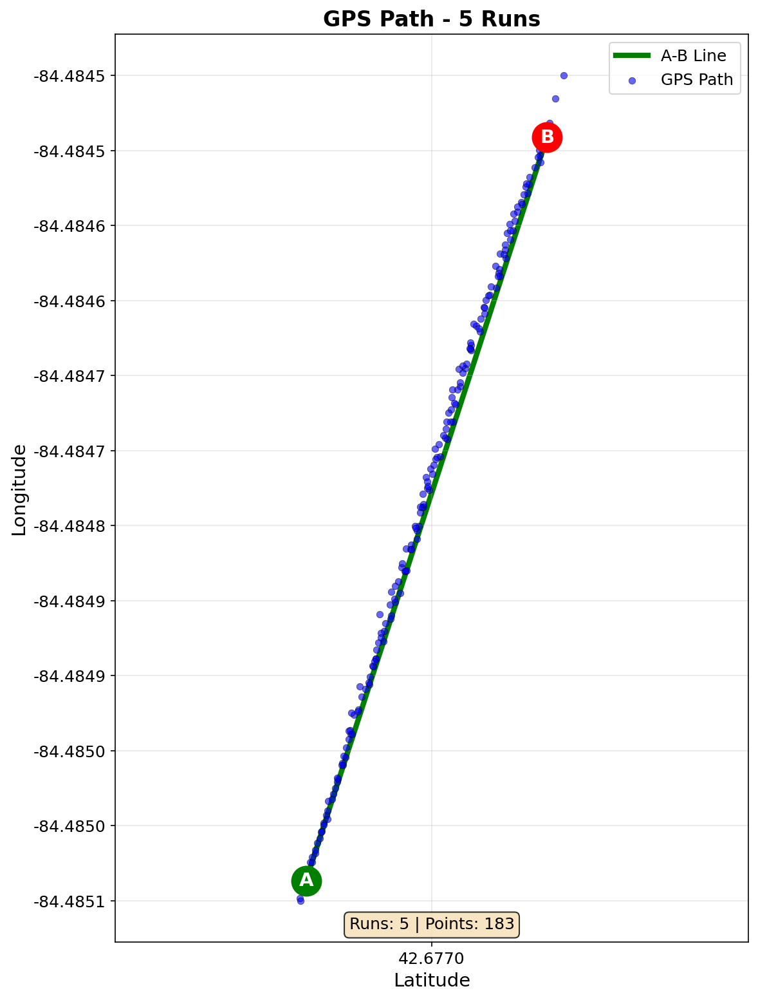
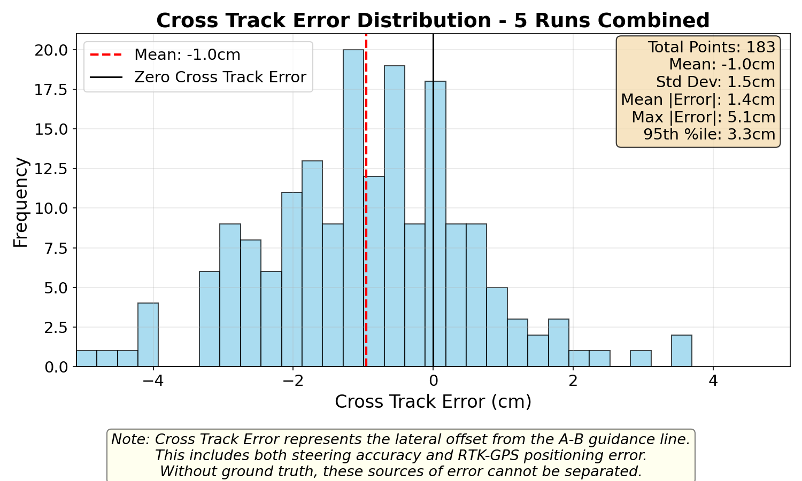

Autosteer Tractor System
Autonomous GPS-guided steering for precision agriculture

Project Overview
The Autosteer Tractor System is an autonomous steering solution designed to enhance precision in agricultural operations. Using GPS technology and sensor fusion, this system enables tractors to navigate fields with centimeter-level accuracy, reducing operator fatigue and improving operational efficiency.
Precision agriculture technology has traditionally been accessible only to large-scale farming operations due to prohibitive costs—commercial autosteer systems can exceed $10,000. This project demonstrates that high-precision GPS guidance can be built for under $2,200 using open-source software and readily available components, making advanced agricultural technology accessible to small and mid-size farmers.
By leveraging the open-source AgOpenGPS platform and transparent hardware design, this system prioritizes repairability and user empowerment. Farmers can understand, modify, and repair their own equipment rather than relying on proprietary systems with restrictive licensing. This approach aligns with the right-to-repair movement in agriculture, giving farmers full control over their technology investments while reducing long-term operational costs.
The environmental and economic benefits are significant: precision steering reduces overlap in field operations, minimizing fuel consumption, fertilizer waste, and chemical runoff while increasing crop yields through optimized planting patterns and consistent row spacing.
System in Action

The autosteer system operating in a production field, demonstrating precise GPS-guided navigation. The system maintains consistent row spacing and optimal path following even in challenging terrain conditions.
Key Features
- RTK-GPS integration for centimeter-level positioning accuracy
- Real-time sensor fusion combining GPS, IMU, and wheel encoders
- PID control system for smooth steering corrections
- Modified open-source software to record XTE (cross-track error) values for configuration optimization
- Data collection and analysis pipeline for performance tuning
- Path planning and following algorithms
- User-friendly interface for field boundary setup
- Safety features including manual override and obstacle detection
Technical Details
Mechanical
- Steering motor integration with hydraulic system
- Wheel Angle Sensor (WAS) mounting and calibration
- Custom printed circuit board enclosure with auto-steer controller
- Weatherproof electronics housing
- GPS antenna mounting for optimal satellite visibility
- RTK base station tripod setup
- 12V power system integration
- Cable routing and protection
Hardware
- Steering motor with driver ($250)
- Wheel Angle Sensor (WAS) ($101)
- Multi-band GNSS receiver ($600)
- RTK base station ($500)
- Auto-steer controller (printed circuit board)
- Tablet for AgOpenGPS interface ($700)
- 12V power supply system
- RF communication module for RTK corrections
Software
- AgOpenGPS open-source software
- Custom modifications for XTE data logging
- RTK correction processing algorithms
- Tablet-based control interface
- Field mapping and path planning tools
- Real-time GPS position tracking
- Steering control algorithms
Challenges & Solutions
Internet Reliability & RTK Corrections
Challenge: Agricultural fields often lack reliable internet connectivity, making it difficult to receive real-time RTK correction data from internet-based services. This resulted in inconsistent GPS accuracy and unreliable autonomous operation.
Solution: Implemented a local RTK base station with radio modules for direct base-to-rover communication. This created a robust, offline RTK system that doesn't depend on internet connectivity. The radio modules provide reliable correction data transmission within the field, ensuring consistent centimeter-level accuracy regardless of cellular coverage.
Impact: Achieved reliable autonomous steering with consistent ±2cm accuracy in all field conditions, eliminating dependency on internet infrastructure and making the system truly field-deployable.
Results & Impact
Extensive field testing was conducted to validate the system's performance, with data collection across multiple runs to measure cross-track error (XTE) - the lateral offset from the intended guidance line.

GPS path visualization showing tight clustering around the A-B guidance line across 5 consecutive runs, demonstrating excellent repeatability and path-following accuracy.

Cross-track error distribution revealing a normal distribution centered near zero, indicating reliable and predictable performance.
Performance Metrics
Analysis of 5 consecutive runs (183 data points) demonstrated:
- Mean Cross-Track Error: -1.0cm (systematic offset)
- Standard Deviation: 1.5cm (consistency measure)
- Mean Absolute Error: 1.4cm (typical deviation from path)
- Maximum Error: 5.1cm (worst-case deviation)
- 95th Percentile Error: 3.3cm (95% of points within this range)
Note: Cross-track error represents the combined effect of both steering accuracy and RTK-GPS positioning error. Without ground truth reference, these error sources cannot be separated.
Great Lakes Expo 2025
This autosteer tractor system was presented at the Great Lakes Expo 2025, one of the premier agricultural trade shows in the Great Lakes region. The expo brings together farmers, agricultural professionals, and technology innovators to showcase the latest advancements in farming equipment and precision agriculture.
The presentation focused on demonstrating how open-source technology and affordable components can make precision agriculture accessible to small and mid-size farming operations. Attendees showed significant interest in the system's cost-effectiveness, transparency, and repairability—key factors that differentiate this approach from commercial proprietary solutions.
The opportunity to present at Great Lakes Expo provided valuable feedback from real-world farmers and industry professionals, validating the practical applicability of the system and highlighting the growing demand for affordable, farmer-controlled agricultural technology.